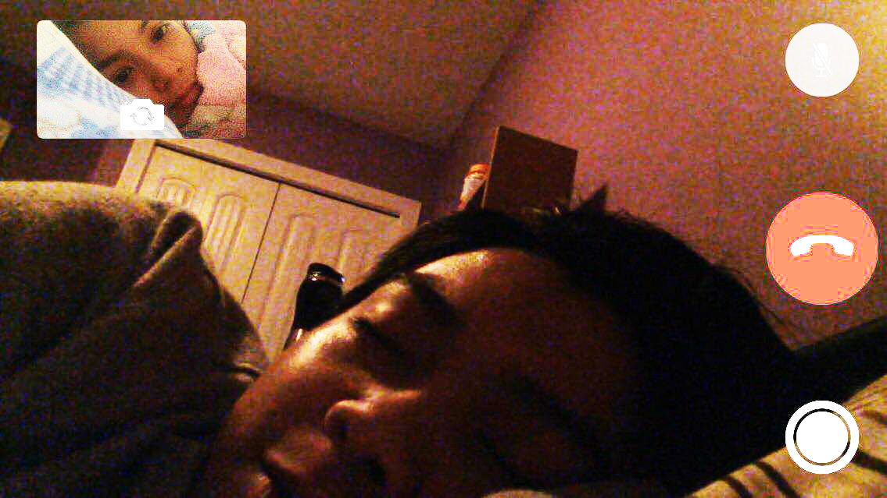

So here it goes, baby. At first, I didn't really expect that we will come this far. Biruin mo ang dami na nating pinagdaanan together. All the bashes and stuff. Lahat na yata ng pwedeng pagsubok hinarap na natin pero ito pa rin tayo ngayon lumalaban, strong, at patuloy na nagtitiwala sa isa't isa.
I didn't knew that God will allow us to get back together, better than the first time we had feelings for each other. But yeah, there's definitely no need to rush in love. There's always a right time for everything . And March 07, 2017 was the right time for the both of us.
Akala ko talaga nung una, wala lang. fling lang. Akala ko hanggang landian na lang. Hanggang sa umaayaw na ako pero nageffort ka to win me back. There are also a lot of times that I thought would be the end of our relationship. But no, we both learned our lessons from all those "away" that we had. I also told you that I will break up with you when you left me and you go to Canada. Pero nung nandun na tayo sa situation na yun, tbh, hindi ko pala talaga kaya. Ewan ko ba. Bakit nung una hindi ko nakita yung worth mo pero ngayon parang hindi ko na yata gugustuhin pa na mawala ka.
Ganun naman yata talaga diba? May mga bagay na sa una hindi mo makita yung halaga pero kapag nakuha na ng iba dun mo makikita na mahalaga pala sila. Maswerte lang ako baby kasi kahit binalewala kita nung una, ibinalik ka pa rin sa akin ni Lord. Salamat kasi pinagbigyan mo rin yung "tayo".
Alam mo ba, baby, sobrang saya ng nararamdaman ko ngayon. Una dahil sa ako pala yung unang babae na icecelebrate mo nang anniversary (yung straight months, no other person involved) Sobrang sarap din sa pakiramdam kasi never mo pinaramdam sakin na hindi ako enough. Sobrang bihira na lang talaga sa panahon ngayon yung kagaya mo na kahit malayo sa mahal niya, nakukuha pa rin niyang maging loyal. Sobrang saludo ako sayo dun baby kasi ikaw lang nagparamdam sakin na kaya mo akong mahalin at pasayahin nang ako lang, kahit gaano pa tayo hadlangan ng TIME and DISTANCE.
Ngayon, malayo ka, ang maipapangako ko lang sayo is maghihintay ako sayo kahit gaano pa katagal. Hinding hindi ko ibebreak sayo yung promise ko na ikaw lang talaga, na tayong dalawa hanggang sa dulo, na magpapakasal tayo. Alam ko darating yung panahon na loloobin ni Lord na magkasama tayo ulit. I know that what is happening to us right now is to make us stronger and learn more things eventhough we are not together. Siguro nga kung hanggang ngayon araw-araw tayo magkasama, baka nagbreak na rin tayo sa sobrang dalas mag-away. I'm not saying that yun ang mangyayari kapag magkasama tayo. What I mean is because of this kind of relationship, we learned how to handle fights, emotions and temper and to fix our misundestandings without having to say the words, "Ayoko na. Break na tayo." Although, there are a lot of times that we almost breakup na talaga. Lalo na nung bago-bago ka pa lang sa Canada. But thank God, He both changed us. At ngayon, naniniwala ako na we are stronger than ever.
But yeah, we are not that kind of perfect relationship and we don't have to be like one. What I need is to have a relationship that I can keep until my last breath. A relationship that I can hold onto whatever struggles that may come to us. There will be more to come, babe. And I know that know you that. Ikaw pa ba? Ang dami mo na kayang natututunan sa buhay. Kaya nga ang dami ko rin natututunan sayo e. So for now, while we are far from each other, I want you to take care of yourself, to achieve your dreams, to build a better future for yourself, for your mami and ate, and of course for our future family. You know that I have a BIG BIG TRUST on you. And I know that you'll never break it.
So now that we are about to begin a new chapter of our relationship, I pray for us to become much stronger this another year. I hope that the days, weeks, months that will come will be much more memorable and exciting. I also hope that there will be really NO MORE BREAKUPS. I am also looking forward to more happy moments with you this another year. And to be realistic, sana hindi tayo magsawa kasi yehey nakalipas na ang isang taon hahahaha. Sana hindi ka magbago at sana ako pa rin hanggang sa mga susunod pang 69 million years. I really hope and pray to see you very soon. I can't wait to hug and kiss you, again. I miss you baby. I love you so much!
